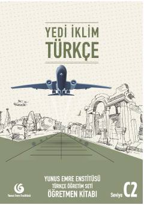

YİTurk tilini C2 darajasida o'qitish uchun mo'ljallangan metodik qo'llanma.
Bu kitob Yunus Emre Enstitüsü tomonidan chet tili sifatida turk tilini o'rganayotganlar uchun C2 darajasida tayyorlangan o'qituvchi qo'llanmasidir. Kitobda darslarni samarali tashkil etish, o'quvchilarning tinglab tushunish, o'qish, yozish va gapirish ko'nikmalarini rivojlantirish uchun uslubiy ko'rsatmalar berilgan. Nashr turk tilini mukammal o'rgatish jarayonida o'qituvchilarga eng yaxshi yordamchi vosita bo'lish uchun mo'ljallangan.